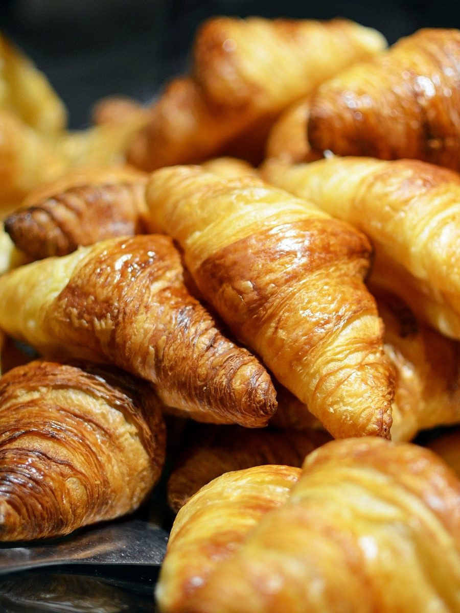

博多製菓
パン屋 / 熊本県水俣市
電話(Googleマップ記載)0966-62-1522
熊本県水俣市にあるパン屋「博多製菓」のご案内ページです。営業時間やメニューなど、詳しいことは準備中。まずはInstagramをのぞいてみてください。
制作側の連想
電話番号の十桁を、黒電話のダイヤルに見立てて
店名の由来は分かりません。制作側は、Googleマップに載っていた電話番号「0966-62-1522」の十桁から、ダイヤルを一桁ずつ回す黒電話を連想しました。このページは、ダイヤルの穴の位置に写真を並べる作りにしています。お店の理念・由来とは無関係の、制作側の連想です。
十個の穴、十枚の写真(イメージ)
ダイヤルの穴に並べたパン
写真は水俣市やお店のものではありません。国外または撮影地不明のフリー素材で、お店で提供しているものを示すものでもありません。
 1
1 2
2 3
3
4 5
5 6
6 7
7 8
8 9
9 0
0TEL0966-62-1522
- 1バゲット(撮影地不明)
- 2エピ(撮影地不明)
- 3クロワッサン(撮影地不明)
- 4クロワッサンの山(撮影地不明)
- 5かごのロールパン(撮影地不明(米国機関由来の画像))
- 6粉をまとった田舎風のパン(撮影地不明)
- 7十字の切り込みの丸パン(アメリカ合衆国カリフォルニア州ソノマ)
- 8麦畑(イギリス・リンカンシャー)
- 9天板のバンズ(撮影地不明)
- 0雑穀のパン(撮影地不明)


ご案内
お店のこと(確認できたものだけ)
| 所在地 | 〒867-0063 熊本県水俣市洗切町1-13 |
|---|---|
| 電話 | 0966-62-1522(Googleマップ記載) |
| 営業時間 | 準備中 |
| 定休日 | 準備中 |
| ご予約 | 準備中 |
| 駐車場 | 準備中 |
| SNS | Instagram @hakatapan.minamata |